Restaurante El Faro de Cádiz
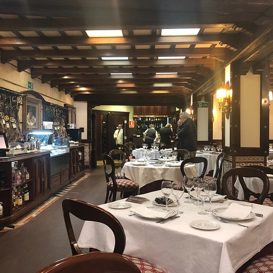
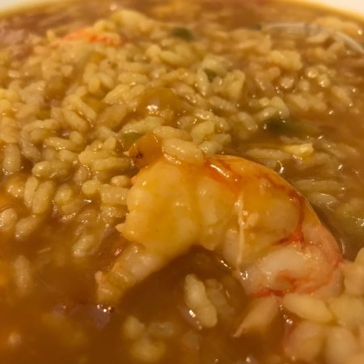
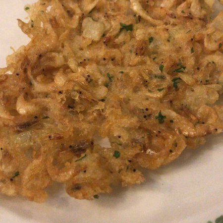
El Faro de Cádiz nace en 1964 como una pequeña taberna donde se elaboraba una cocina sencilla y local, pescados de la Bahía en fritura, guisos marineros, una cocina donde solo la mar marcaba los ritmos y lo que se cocía en sus fogones.
Quiso el destino escoger el popular y conocido barrio de la Viña como nuestro epicentro. Un pequeño rincón del mundo, testigo de nuestra historia familiar y evolución, que resguardado por los Castillos de Santa Catalina y San Sebastián y bañado por las aguas de la playa de La Caleta se ha convertido en nuestro particular paraíso.
Tras tres generaciones seguimos cocinando con la misma ilusión una cocina de raíces, que nace en el mar y se deja abrazar con productos de nuestro entorno. Lo mejor de nuestra tierra para el disfrute de nuestros comensales, una larga conversación que dura ya más de medio siglo.
Dirección:
Calle San Félix 15
CP:
11002
Localidad:
Cádiz, España
Teléfono:
+34 956 21 10 68
Pagina web:
www.elfarodecadiz.com
Restaurante Cafe Royalty
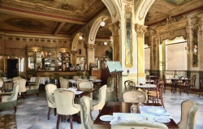
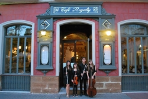
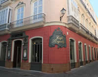
El empresario gaditano Gómez Doreé abre sus puertas en 1912, festejando el centenario de Las Cortes de Cádiz de 1812. Gracias a su suntuosa decoración, exquisitos productos, su servicio esmerado y conciertos todas las noches, se convierte rápidamente en el café más visitado de la ciudad. Literatos, intelectuales, políticos, músicos y artistas hacen del café un espacio con un ambiente variopinto y único. A él acuden figuras internacionales tan ilustres como el gran compositor gaditano Manuel de Falla, quien deleito al público con sus conciertos.
Dirección:
Plaza de la Candelaria S/N
CP:
11500
Localidad:
Cádiz, España
Teléfono:
+34 956 07 80 65
Pagina web:
www.caferoyalty.com
Ventorrillo El Chato
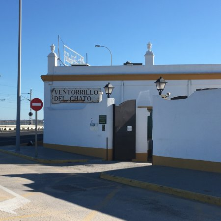
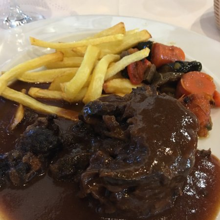
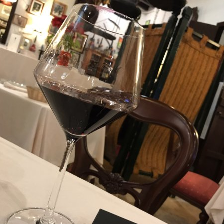
El Ventorrillo "El Chato" fue construido en 1780, para alivio de caminantes, en el espigón polvoriento que unía Cádiz con la Isla.
Es la historia inconcreta, mezcla de datos y suposiciones, envuelta en una duda emocionante que nos hace buscar, en la cal de las paredes del sótano, las voces y las figuras de los que allí estuvieron cuando las tropas francesas, en 1812, sitiaban la ciudad y se instaló en la venta una batería de cañones para hostilizar el enemigo que disparaba desde el Trocadero.
Se dice que la venta fue fundada por autorización de Conde O´Reilly, por Chano García, a quien apodaban "El Chato" por causa de su gran nariz.
Dirección:
Via Augusta Julia S/N | Carretera San Fernando
CP:
11011
Localidad:
Cádiz, España
Teléfono:
+34 956 25 00 25
Pagina web:
www.ventorrilloelchato.com
La Tapería de Columela
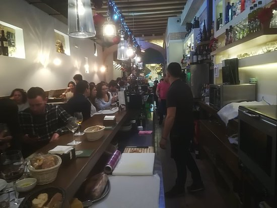
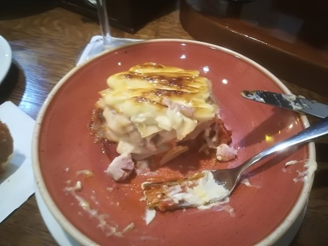
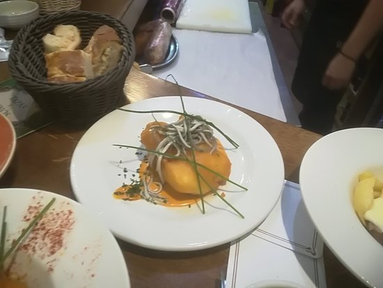
Un agradable lugar donde se combina lo andaluz rústico con un toque moderno, sin perder su calidez.
Deliciosos guisos tradicionales combinados con las recetas más innovadoras.
La elaboración está a cargo de nuestro chef Agustín Campos y su excelente equipo.
Dirección:
Calle Columela 4
CP:
11002
Localidad:
Cádiz, España
Teléfono:
+34 956 07 42 97
Pagina web:
www.lataperiadecolumelacadiz.es